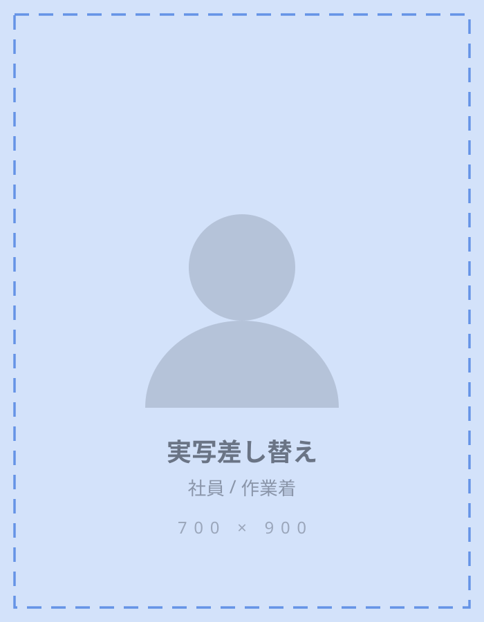
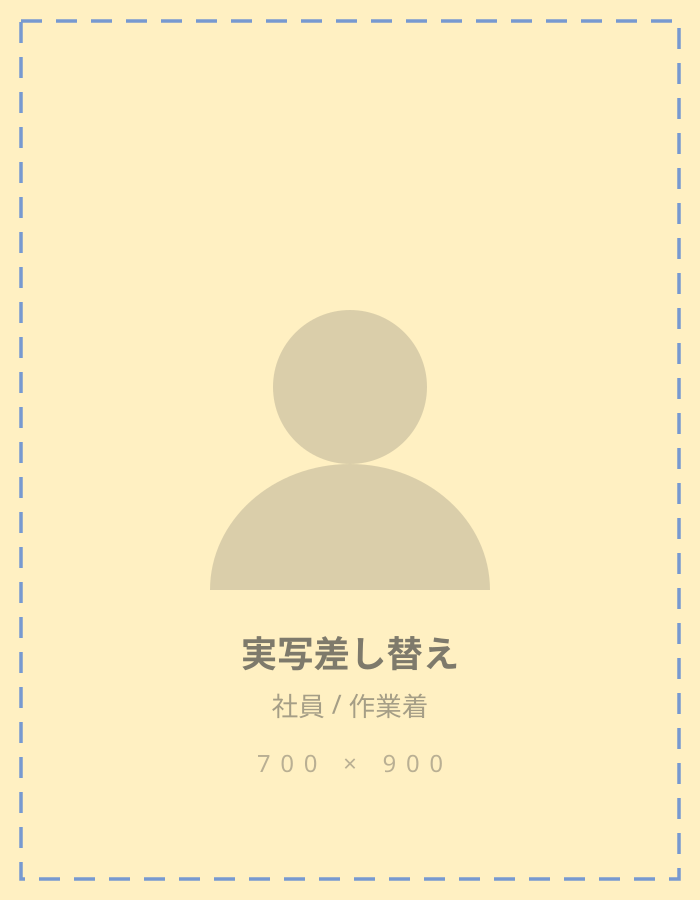
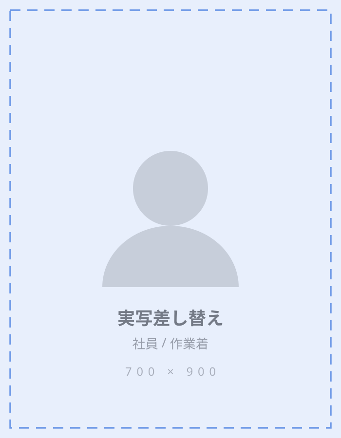

求人票の「残業ほぼなし」を信じられない方へ。過去12ヶ月の実績値をそのまま出します。下のタイムラインで、社員の1日を時刻まで確認してから応募してください。
START
228万円〜
3RD YEAR AVG
480万円
OVERTIME
12h／月
TURNOVER
6%
履歴書は不要です。まず工場を見学するだけでも構いません。
A day at work
現場の仕事を迷う一番の理由は、終わる時刻が分からないことだと思っています。3人分の実際の1日を、24時間の帯で出しました。
勤務 休憩 残業 自由時間
上記は2025年の実績にもとづく代表的な1日です。繁忙期（3月・9月）は残業が月20時間程度まで増えます。その分は全額支給し、代休の取得も可能です。
By the numbers
離職率6%は良い数字ですが、平均年齢は上がっており、若手が足りていないのが実情です。
6%
年間離職率
（製造部門）
98%
有給取得率
（2025年実績）
44歳
平均年齢
（若手を増やしたい）
72%
未経験入社の割合
（直近3年）
People
年収も本人の許可を得て出しています。

前職：飲食店ホール
立ち仕事という点では前職と同じですが、終わる時刻が読めるのが決定的に違います。友達との約束を入れられるようになりました。
年収 452万円
前職：事務（派遣）
力仕事はほとんどありません。5kg以上のものは機械が運びます。班長になってからは、人の教え方のほうが難しいです。
年収 561万円
前職：留学生・アルバイト
日本語は今も完璧ではありません。作業手順書に中国語版とベトナム語版があるので、最初から困りませんでした。
年収 498万円Conditions
カレンダー通りです。GW・お盆・年末年始は長期休暇になります。
工場から徒歩8分。単身用ワンルーム、家電付き。入寮の空きは現在3室です。
フォークリフト、玉掛け、クレーンなど。取得すると手当が月3,000〜8,000円つきます。
夜勤はありません。生活リズムは崩れません。
2023年に全ラインへスポットクーラーを導入しました。夏場の室温は概ね28℃以下です。
業績連動です。過去5年は3.8〜4.5ヶ月の範囲で推移しています。
Requirements
| 職種 | 製造スタッフ（機械オペレーター・検査・組立） |
|---|---|
| 雇用形態 | 正社員（試用期間3ヶ月・条件の変更なし） |
| 給与 | 月給19万円〜（未経験）／経験・資格により優遇 3年目の平均年収 480万円（賞与含む） |
| 勤務時間 | 8:15–17:15（実働8時間・休憩60分） |
| 休日 | 土日祝・年間休日122日・有給10日〜 |
| 勤務地 | 埼玉県熊谷市三ヶ尻1234（マイカー通勤可・駐車場無料） |
| 応募資格 | 学歴・経験不問／要普通自動車免許（AT可） 日本語での日常会話ができる方 |
| 選考 | 書類なし → 工場見学＋面接1回 → 内定（最短5日） |
Apply
履歴書は不要です。まず見学だけ、でも構いません。2営業日以内に連絡します。
2営業日以内に、採用担当よりご連絡します。
現在の勤務先への連絡は一切いたしません。
FAQ